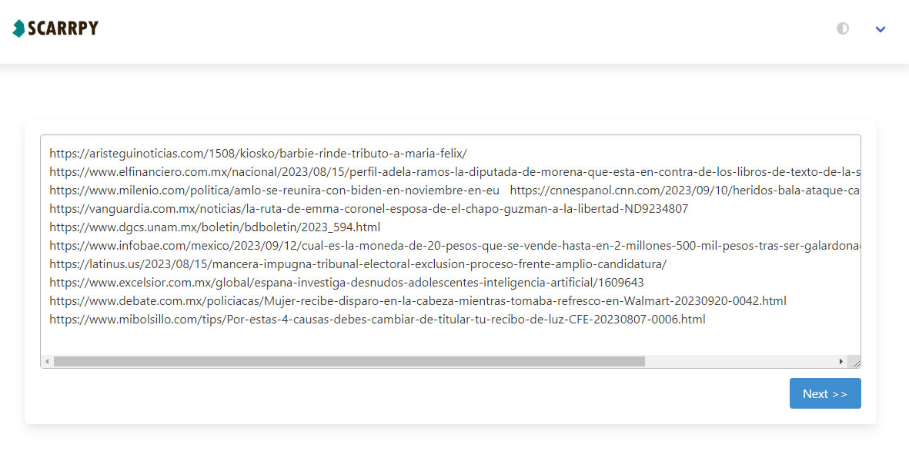
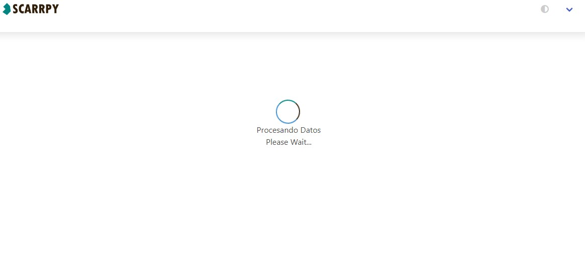
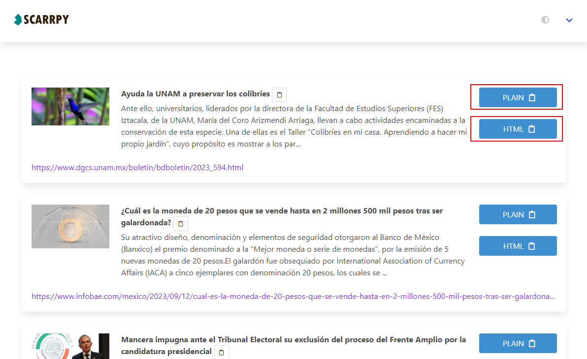
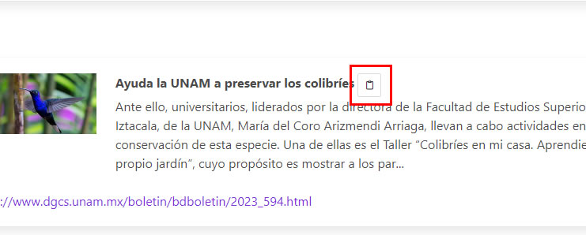
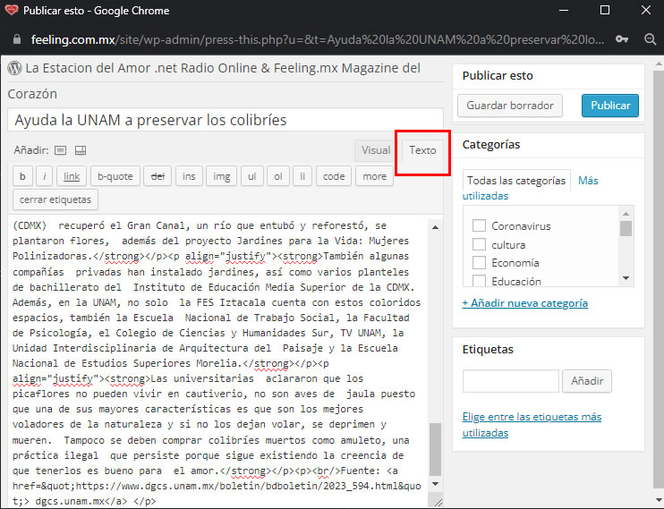
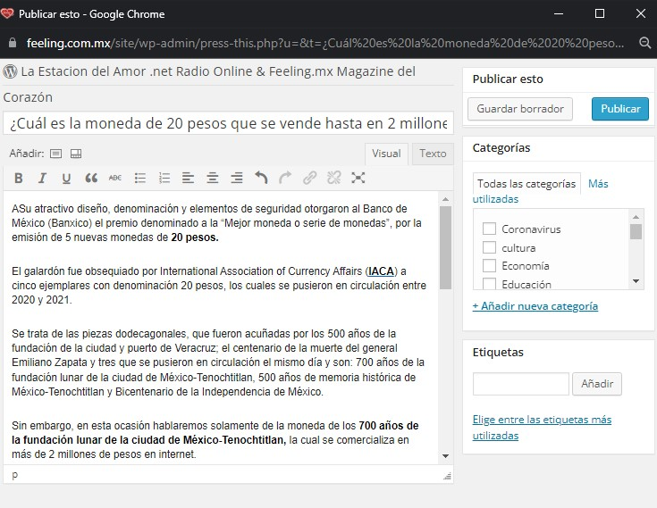

1.- En la pantalla principal coloque los links necesarios separados por "enters", después presione el botón "Next >>".

Anotación: Es posible colocar y procesar una lista completa de links sin embargo, hay que tomar en cuenta que esto puede
ralentizar el sistema ya que hay algunas páginas (como el universal), que tardan mucho en enviar una petición.
2.- Se desplegará una ventana con un cargador, espere mientras SCARRPY trabaja.

Dependiendo de la cantidad de páginas a procesar, del servidor y de las peticiones recibidas en cada sitio de noticias, tardara lo suficiente como para prepararse un buen café ☕ o té 🍵.
En caso de existir algún error, este se mostrará. Hay ocasiones donde se da un error por "time-out", esto quiere decir que se pasó el tiempo de espera de procesamiento (dependiendo
de la configuración del servidor puede ser de entre 20 segundos a 2 minutos).
3.- Si todo salio bien, se mostrará listado con un resumen de cada una de las noticas seleccionadas. Ahora es cuestion de seleccionar los datos
en texto plano o en formato html, para ello tenemos que dar clic en los botones correspondientes, una vez que se de clic la informacion se almacenrará en el clipboard.

4.- Por último, publicaremos esta información directamente en WordPress. Para esto tenemos que dar clic en el icono de clipboard que se encuentra al final del título, esto nos abrirá una pequeña ventana
con las opciones para publicar.

Es necesario estar logeado en la página principal de WordPress (maxi), para poder mostrar directamente la ventana de publicación.
5.- Dentro de la ventana de la publicación se encontrará precargado el título del artículo. Para colocar el contenido de forma correcta es necesario ir a la pestaña "TEXTO" y
pegar lo que ya se copió al dar click a los botones de contenido.

6.- Después de una revisión (vista previa), se puede proceder a dar el visto bueno para publicar.

Aquí finaliza la guía rápida para el uso de Scrrrpy, existen más funcionalidades dentro del sistema
(como por ejemplo obtener la Url de la imagen tan solo dandole clic a la imagen dentro del listado), pero eso es para otro manual.